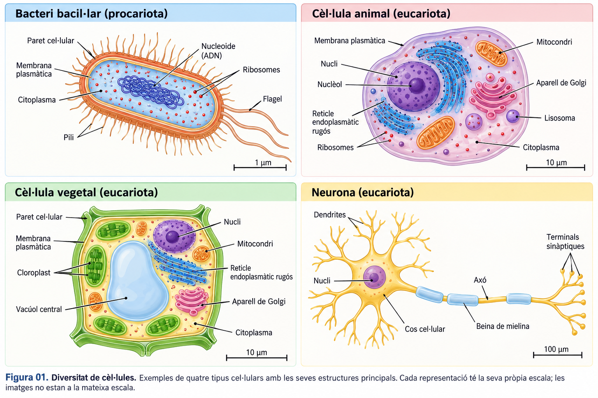
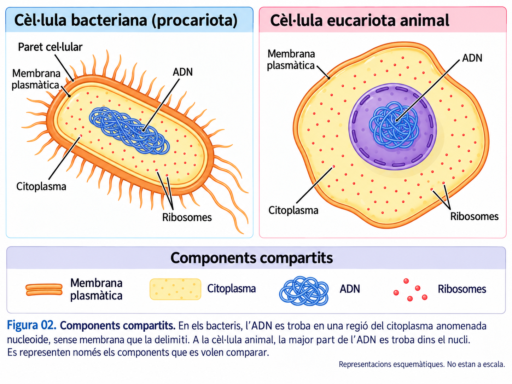
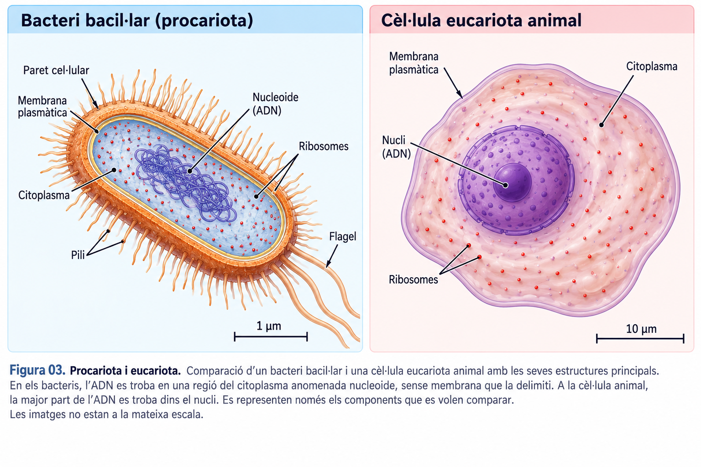
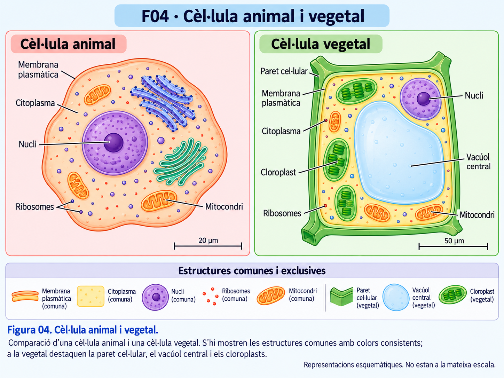
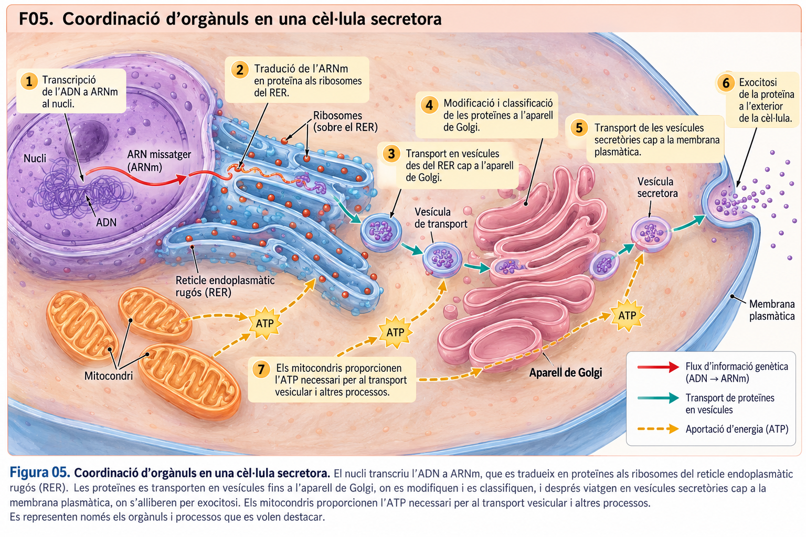
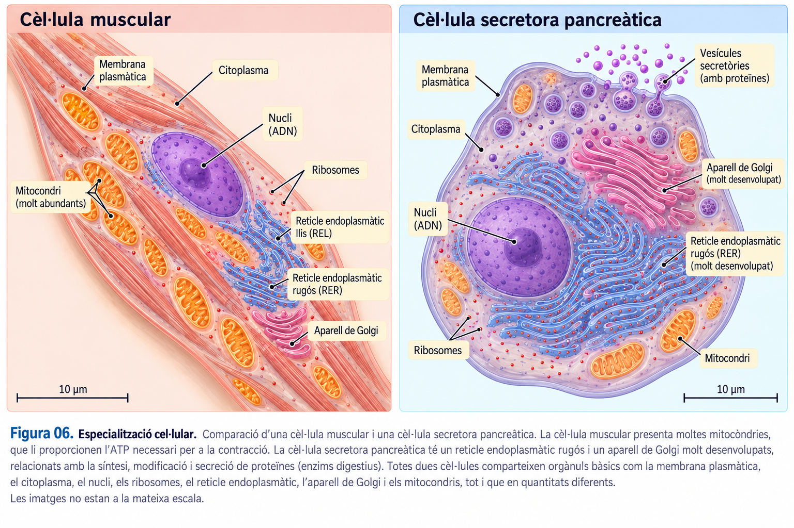
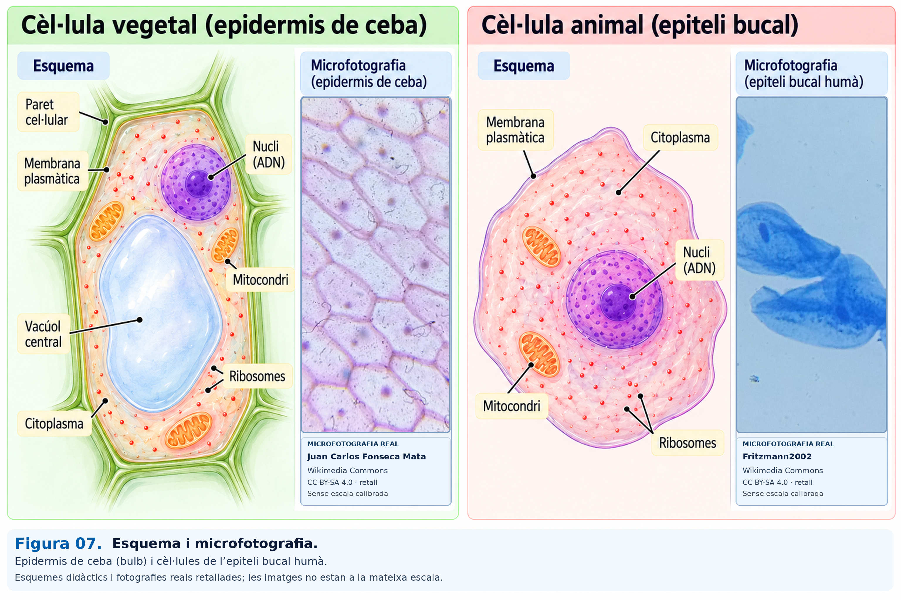

A01 · La diversitat cel·lular¶
Com poden ser tan diferents les cèl·lules si totes comparteixen una organització bàsica?¶

UD02 · La continuïtat cel·lular · Biologia i Geologia · 4t d'ESO
En aquest recorregut compararem cèl·lules, relacionarem estructures i funcions i seguirem la cooperació entre orgànuls. Les comprovacions són per aprendre i repassar; no s'han de lliurar.
1 · Diversitat de formes, una mateixa base¶
Un bacteri, una neurona i una cèl·lula vegetal poden tenir formes molt diferents. La seva forma i organització estan relacionades amb les funcions que desenvolupen.
La teoria cel·lular estableix que tots els éssers vius estan formats per una o més cèl·lules; que la cèl·lula és la unitat bàsica d'estructura i funcionament; i que tota cèl·lula prové d'una altra cèl·lula preexistent.
Idea clau: la diversitat de formes no impedeix que totes les cèl·lules comparteixin alguns components fonamentals.
2 · Què comparteixen totes les cèl·lules?¶

- Membrana plasmàtica: delimita la cèl·lula i regula els intercanvis amb el medi.
- Citoplasma: inclou el citosol i les estructures que conté; és on es duen a terme moltes reaccions.
- ADN: conté informació necessària per al funcionament i la continuïtat cel·lular.
- Ribosomes: participen en la síntesi de proteïnes.
«Els bacteris no tenen nucli; per tant, no tenen ADN». Què en penses?
3 · Dos models d'organització cel·lular¶
Les procariotes no tenen nucli delimitat per membrana: l'ADN se situa principalment en el nucleoide. No presenten els orgànuls membranosos típics de les eucariotes. Els bacteris i els arqueus són procariotes.
Les eucariotes tenen la major part de l'ADN dins un nucli i disposen d'orgànuls membranosos, com els mitocondris, el reticle endoplasmàtic o l'aparell de Golgi.

En una cèl·lula s'ha comprovat que l'ADN no és dins un nucli membranós, però s'hi observen ribosomes. Quin model hi encaixa?
Recorda: procariota no vol dir «cèl·lula incompleta». És una organització cel·lular funcional, amb gran diversitat.
4 · Animals i vegetals: dues formes de ser eucariota¶
Les cèl·lules animals i vegetals comparteixen nucli, membrana, ribosomes, mitocondris, reticle endoplasmàtic i aparell de Golgi. Moltes cèl·lules vegetals tenen, a més, paret cel·lular de cel·lulosa i un gran vacúol central. Les cèl·lules vegetals fotosintètiques presenten cloroplasts.

Una cèl·lula d'una arrel té nucli, paret cel·lular i un gran vacúol, però no cloroplasts. Quina conclusió és coherent?
Una altra generalització que cal evitar: les cèl·lules vegetals també tenen mitocondris i duen a terme respiració cel·lular.
5 · Què fa cada orgànul?¶
Identificar els orgànuls i conèixer-ne la funció és el primer pas per explicar com funciona una cèl·lula. Intentau recordar què fa cada estructura abans de descobrir-ne la resposta.
Consulta la resta d'estructures i funcions del material guia
| Estructura | Funció principal |
|---|---|
| Membrana plasmàtica | Regula intercanvis i comunicació amb l'exterior. |
| Nucli | Conté la major part de l'ADN eucariota i participa en la regulació cel·lular. |
| Reticle endoplasmàtic llis | Síntesi de lípids i regulació del calci, entre altres funcions. |
| Lisosomes | Digestió i reciclatge de materials, especialment en cèl·lules animals. |
| Vacúols | Emmagatzematge; en plantes també participen en la turgència. |
| Cloroplasts | Fotosíntesi en les cèl·lules fotosintètiques. |
| Citoesquelet | Suport de la forma, organització i moviment cel·lular. |
| Centrosoma | Organització dels microtúbuls en moltes cèl·lules animals. |
Idea clau: els orgànuls no funcionen com a peces independents. Les funcions cel·lulars depenen de la seva coordinació.
Practica abans de continuar: relaciona noms i funcions en tots dos sentits. Les targetes van desapareixent amb els encerts; si t'equivoques, tota la ronda es reinicia amb les 12 cartes barrejades.
6 · Com fabrica i secreta una proteïna una cèl·lula?¶
Algunes cèl·lules del pàncrees produeixen proteïnes que s'han d'alliberar a l'exterior. El procés requereix diferents estructures:

L'ADN aporta la informació; els ribosomes sintetitzen les proteïnes; el reticle i el Golgi participen en el processament i el transport; i les vesícules secretores permeten alliberar-les. Els mitocondris proporcionen ATP per a moltes d'aquestes activitats, però no són una estació del trajecte físic de la proteïna.
7 · Què passa si falla una peça del sistema?¶
En una cèl·lula secretora l'aparell de Golgi deixa de funcionar correctament. Quina conseqüència és més probable?
El que importa és el raonament causal: identificar quina funció feia l'estructura, quin procés hi depenia i què es veuria afectat.
8 · Especialització: mateixa base, diferents necessitats¶

Una cèl·lula muscular amb molta activitat contràctil necessita energia i pot tenir nombrosos mitocondris. Una cèl·lula que secreta moltes proteïnes pot tenir el reticle endoplasmàtic rugós i l'aparell de Golgi molt desenvolupats.
Què podem concloure si una cèl·lula té un reticle rugós i un Golgi especialment desenvolupats?
9 · Un esquema no és una microfotografia¶
Els esquemes destaquen estructures per facilitar-ne la comprensió. Les microfotografies depenen de l'instrument, la preparació, la tinció, la resolució i el pla observat.

Fonts de les microfotografies de F07: epidermis de ceba — Juan Carlos Fonseca Mata, Wikimedia Commons; cèl·lules de la mucosa bucal humana — Fritzmann2002, Wikimedia Commons. Ambdues imatges: CC BY-SA 4.0. S'han incorporat a una composició didàctica amb esquemes.
_007533276M.jpg){kind=link}
.jpg){kind=link}
En una microfotografia no s'identifica clarament el nucli. Quina conclusió és científicament prudent?
Recorda: sense una escala adequada tampoc no podem deduir amb seguretat la mida real a partir de l'aspecte de la imatge.
10 · Què hauries de saber explicar ara?¶
- Què comparteixen totes les cèl·lules i en què poden diferir.
- Com justificar si una cèl·lula segueix un model procariota o eucariota, animal o vegetal.
- Quines funcions desenvolupen les estructures principals.
- Com cooperen els orgànuls perquè una proteïna pugui ser secretada.
- Què podem afirmar —i què no— quan interpretam un esquema o una microfotografia.
Per preparar-te o recuperar una classe perduda, consulta el Bloc 1 del material guia de la UD02. Hi trobaràs les explicacions completes, la taula d'orgànuls i les figures de referència.
No cal lliurar les respostes interactives. Pots tornar a les seccions anteriors per revisar qualsevol dubte.
11 · Investiga i comparteix¶
Els secrets de les cèl·lules¶
Ja coneixes les estructures cel·lulars principals i les seves funcions. Ara investigaràs un fenomen real que no hem resolt a les comprovacions interactives.
Cada alumne rebrà una miniinvestigació diferent. Llegeix-ne l'article científic adaptat, respon les preguntes de la fitxa i prepara una explicació breu per compartir la descoberta amb els companys.
Què has de fer?
- Obre l'article del repte que t'ha assignat el professor.
- Llegeix-lo i respon les preguntes de la fitxa de miniinvestigació amb les teves paraules.
- Prepara una presentació de Canva d'una o dues diapositives, amb un esquema propi del mecanisme.
- Explica la descoberta als companys en 2–3 minuts, sense limitar-te a llegir les respostes.
Miniinvestigacions¶
1 · Per què relaxar un múscul també consumeix energia?
Descobreix com el reticle sarcoplasmàtic, el calci i l'ATP cooperen perquè una fibra muscular es pugui relaxar.
2 · La fina línia que sosté la vida
Investiga com els fosfolípids, el reticle endoplasmàtic i les vesícules permeten fabricar i ampliar les membranes cel·lulars.
3 · Monòxid de carboni: asfíxia cel·lular
Descobreix per què el monòxid de carboni pot dificultar el transport d'oxigen i reduir la producció d'ATP als mitocondris.
4 · La trampa invisible dins les neurones
Descobreix com una alteració del gen HEXA pot afectar un enzim lisosomal i provocar l'acumulació de GM2 a les neurones.
5 · Sabotatge a la fàbrica de proteïnes
Descobreix com la tetraciclina bloqueja la fabricació de proteïnes als ribosomes bacterians, per què no funciona contra els virus i com apareix la resistència als antibiòtics.
6 · La proteïna que no arriba mai al seu destí
Descobreix com el plegament de la proteïna CFTR, el control de qualitat del RER i el transport fins a la membrana plasmàtica poden determinar la hidratació i l'eliminació del moc a les vies respiratòries.
Què s'ha de lliurar? La fitxa amb les respostes i la presentació de Canva, segons les indicacions del professor. Les respostes de les comprovacions interactives de les seccions anteriors no s'han de lliurar.